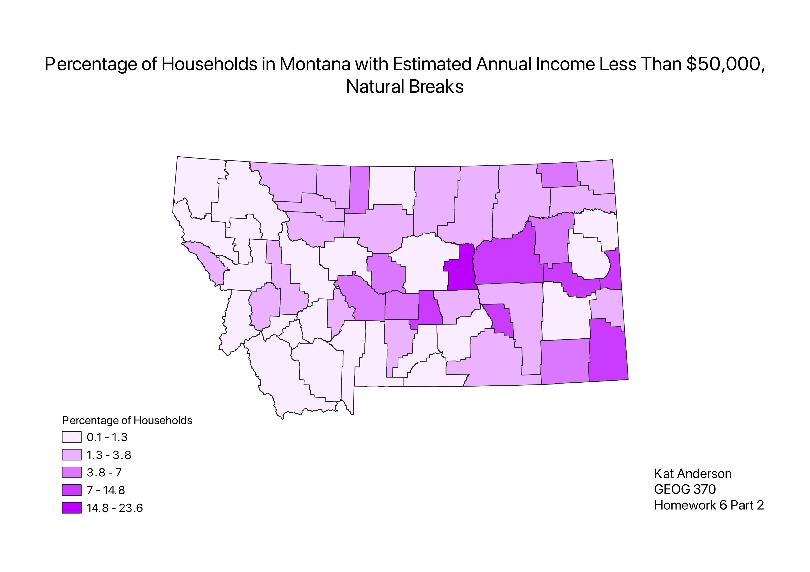
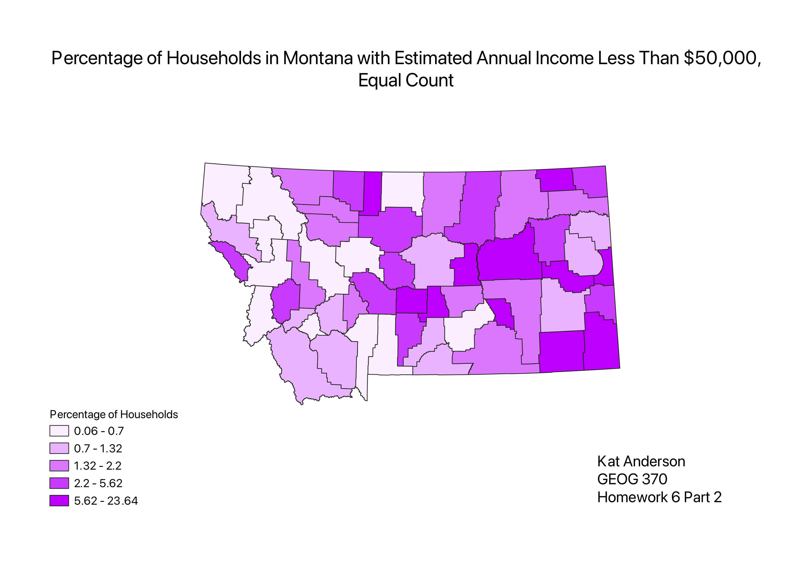
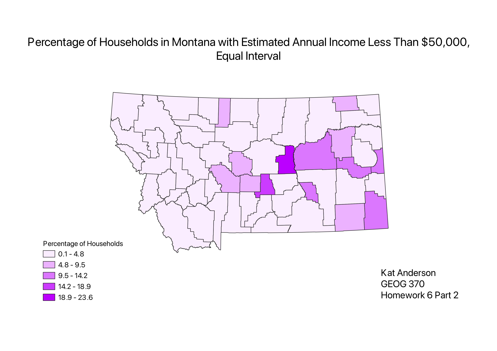

Homework 6 Part 2: Ratios and Categories Census Data
Kat Anderson
These choropleths show the percentage of households in Montana that have an estimated annual income of less than $50,000. To create the percentage, I normalized the number of households with incomes under $50,000 with the total number of households in each county. This data was collected by the American Community Survey from 2017 to 2021, and is now accessible on the U.S. Census Bureau website.
Natural Breaks Classification Scheme

The Natural Break (Jenks) classification scheme is meant to reduce deviation from the mean in each category. Some bins are very large and others are very small, but it is easier to see outliers. It can be difficult to compare 2 maps created with Natural Breaks because the categories are specific to the dataset.
Equal Count Classification Scheme

For Equal Count (or quantile) classifications, the same number of counties are put in each category. Similar data is grouped, but very large or very small outliers are not visualized.
Equal Interval Classification Scheme

In this Equal Interval classification, the categories are divided into equal sizes. The legend is easy to comprehend, but the map is mostly the same color because most values end up belonging to just a few categories.
Data used for this project
CSV Dataset
Link to Montana Shapefile
Montana GeoJSON